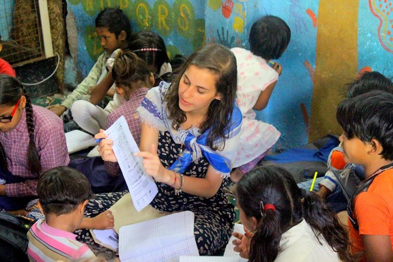
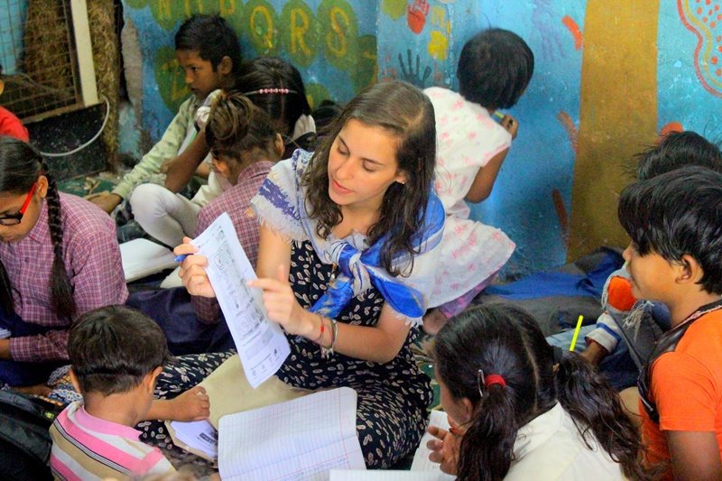
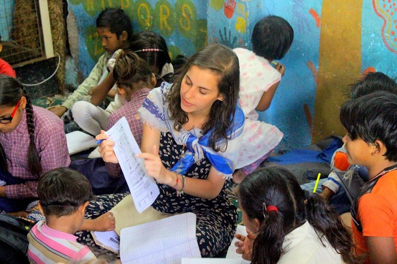

Si está buscando un destino de voluntariado perfecto en el extranjero en 2023 - 2024, Volunteering Solutions está aquí, con una gran cantidad de oportunidades de voluntariado internacional increíbles y asequibles en 25 países de todo el mundo, con programas en casi 40 destinos.
No importa si desea sumergirse en las pintorescas vibraciones del Himalaya mientras realiza un voluntariado en Nepal, o volverse loco mientras realiza un voluntariado en Tailandia, ¡lo tenemos todo para usted! No solo eso, sino que puede experimentar la emoción de los safaris de vida silvestre en Kenia, hacer viajes por carretera en Australia, caminar por el Macchu Picchu en Perú, caminar por las medinas en Marruecos y aprender a cocinar paella en España. Suena increíble, ¿verdad?
Experto Animal facilita oportunidades de voluntariado grupal responsable y gratificante en el extranjero para estudiantes universitarios y universitarios, grupos de escuelas secundarias, familias, amigos y también grupos corporativos. Disponible en varios países de Europa, Asia, África y América Latina que incluyen destinos populares como Tailandia , Camboya ,Nepal , India , Tanzania , Kenia , Perú , Costa Rica , entre otros.
Especialmente diseñado para las necesidades del grupo, nos aseguramos de que los proyectos tengan un trabajo satisfactorio para cada miembro y sean óptimos para inmersiones culturales y viajes locales también. Los proyectos que se ofrecen son de naturaleza diversa y varios en número, pero los ideales para grupos incluyen proyectos de enseñanza y cuidado de niños, proyectos de conservación de la naturaleza y voluntariado para elefantes y programas especiales de viaje y voluntariado de 2 semanas que combinan el trabajo de campo y la exploración del destino visitado.
Ofrézcase como voluntario para los programas de cuidado infantil con Soluciones de Voluntariado y marque la diferencia en la vida de los niños de comunidades desfavorecidas, pasando tiempo con ellos. Esta es la mejor manera de avanzar cuando se trata de imaginar un futuro mejor para el mundo y trabajar para lograrlo. Con proyectos de voluntariado de cuidado infantil disponibles en 25 países de Asia, África, América Latina y Europa, los voluntarios podrán interactuar significativamente con los lugareños, aprender un nuevo idioma, conocer a otros voluntarios de todo el mundo y experimentar los beneficios del compromiso cívico. .

Ya sea de estudiantes de Escuelas, Universidades, un gran grupo de amigos o incluso familiares; Anota a todos los participantes que te acompañaran al voluntariado para que podamos contactarlos y encontrar el mejor voluntariado que se adecue a sus necesidades, encontraremos el destino perfecto para tu grupo!
|